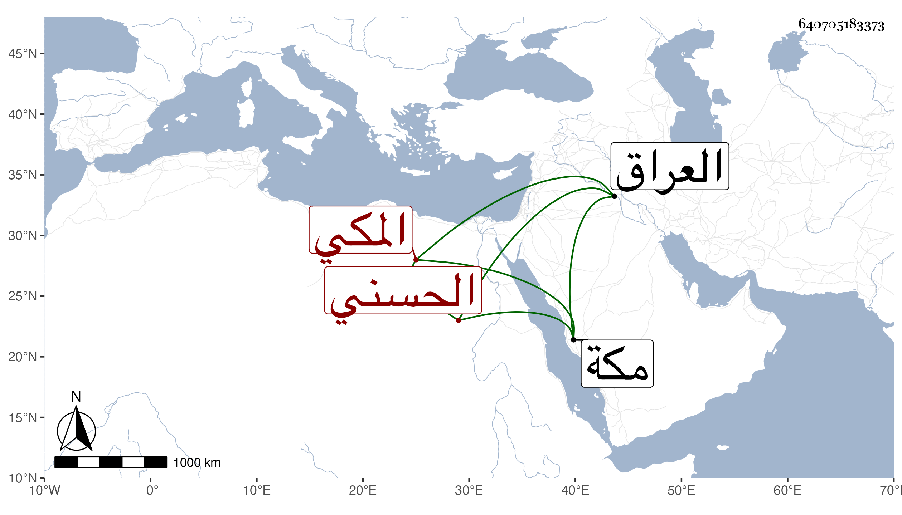

0902Sakhawi.DawLamic.ITO20230111-ara1.EIS1600.640705183373
Biography ID: 640705183373
889
هبة الله بن أحمد بن عمير الحسني المكي من أعيان الأشراف ذوي علي بن قتادة الأصغر . صحب السيد حسن بن عجلان قبل ولايته فلما استقر أقبل عليه وحرص على تجميل حاله فلم يسعد بذلك بل محق ما ناله في اللهو ، واستمر فقيرا حتى مات فجأة أو قريبها في حال اللهو في أثناء سنة تسع عشرة وكان سافر لبلاد العراق رسولا عن صاحبه صاحب مكة قبل بسنتين وعاد بدون طائل . ذكره الفاسي .
